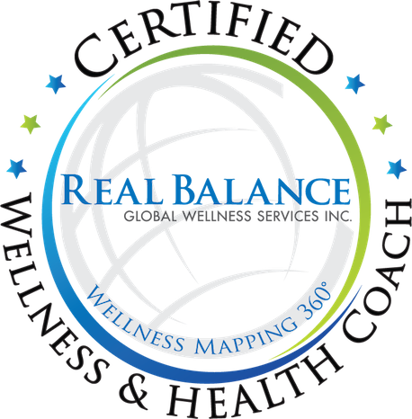

Здравствуйте, я Наталья
BSc (Hons), Dip CNM
Я нутрициолог и велнес-коуч. Работаю онлайн с женщинами, которые устали, потеряли равновесие и чувствуют себя не в своей тарелке. Вместе мы разбираемся, что может за этим стоять, и выстраиваем привычки, которые остаются надолго, — без жёстких диет.
Записаться на бесплатный 20-минутный звонокМоя история
Знать, что делать, — это только половина дела. Вторая половина — встроить это в свою реальную, загруженную неделю.
Проблемы с кишечником в моей семье — не редкость, и лет в двадцать с небольшим они начались и у меня. Вздутие, туман в голове, продукты, которые мне не подходили, высыпания на коже, непростые циклы, бесконечные простуды. У меня было всё и сразу.
Я пробовала один подход за другим и уже теряла надежду. Ни один из них не учитывал картину целиком, а сама я не прислушивалась к своему телу. Больше всего мне помогло не очередное правило. Помогло то, что я наконец поняла, как питание, стресс и сон работают вместе именно в моём теле и что может стоять за моим самочувствием.
Именно поэтому я выучилась на нутрициолога, а потом и на велнес-коуча. Я начинаю с питания и смотрю на картину целиком: на стресс, сон и ежедневные привычки тоже. Знать, что делать, — это только половина дела. Вторая половина — встроить это в свою реальную, загруженную неделю.
Женщины, с которыми я работаю, часто рассказывают мне историю, похожую на мою: усталость, вздутие, растерянность от бесконечных советов — и молчаливое чувство, что во всём виноваты они сами. Я сама через это прошла. Со мной вас никто не будет осуждать, и вам не придётся разбираться во всём одной.

Как я работаю
Во что я верю
-
Вы целостны и полны ресурсов.
Я верю, что каждая женщина изначально целостна и полна ресурсов. Она не проблема, которую нужно решить. Как коуч, я ваша союзница: я поддерживаю вас и задаю вопросы, а решения всегда остаются за вами.
-
Свою жизнь лучше всех знаете вы.
От меня — знания о питании, от вас — понимание того, что сработает в вашей неделе. План мы составляем вместе.
-
Сначала — понимание.
Я объясняю, зачем нужно каждое изменение, чтобы вы могли сами делать осознанный выбор.
-
Маленькие шаги, которые остаются с вами.
Одно изменение, которое прижилось, ценнее десяти брошенных.
-
Без осуждения и без чувства вины.
Трудные недели — тоже часть пути. Мы просто продолжаем с того места, где вы сейчас.
-
Вместе с вашим врачом.
Если у вас есть заболевание, я работаю в дополнение к наблюдению у вашего врача, а не вместо него.

Квалификация
Обучение и квалификация
Обучение
Велнес-коуч и коуч по здоровью (Wellness & Health Coach)
Real Balance Global Wellness Services
2026
Курс коучинга здоровья и благополучия (Masterful Health and Wellness Coaching)
Real Balance Global Wellness Services
2025
Обучение ассистента-супервайзера клиники (Clinic Assistant Supervisor training)
Колледж натуропатической медицины (College of Naturopathic Medicine)
2025
Нутрициология (Nutritional Therapy)
Колледж натуропатической медицины (College of Naturopathic Medicine)
2024
Интегративная нутрициология и гомеопатия (Integrated Nutrition and Homeopathy)
Колледж интегративной нутрициологии и гомеопатии (The College of Integrated Nutrition and Homeopathy)
2021
Бакалавр социологии — BSc (Hons) Sociology
Университет Солфорда (University of Salford)
2014
Где я училась


Вне работы
Ещё немного обо мне
Силы я набираю на природе: у моря или океана, в поездках по тихим и красивым местам. Я по натуре любопытна. Фантастические фильмы заставляют меня задуматься, что ещё есть во Вселенной. Меня увлекают психология и отношения — и, признаюсь, реалити-шоу: то, как люди ведут себя под давлением, многое говорит о нас. Я люблю астрологию и живу в ритме лунных циклов, но последнее слово всегда за здравым смыслом.
Хотите поработать вместе?
Запишитесь на бесплатный 20-минутный звонок. Мы поговорим о том, что вас беспокоит, и поймём, подходим ли мы друг другу. Это ни к чему не обязывает.
Записаться на бесплатный 20-минутный звонок